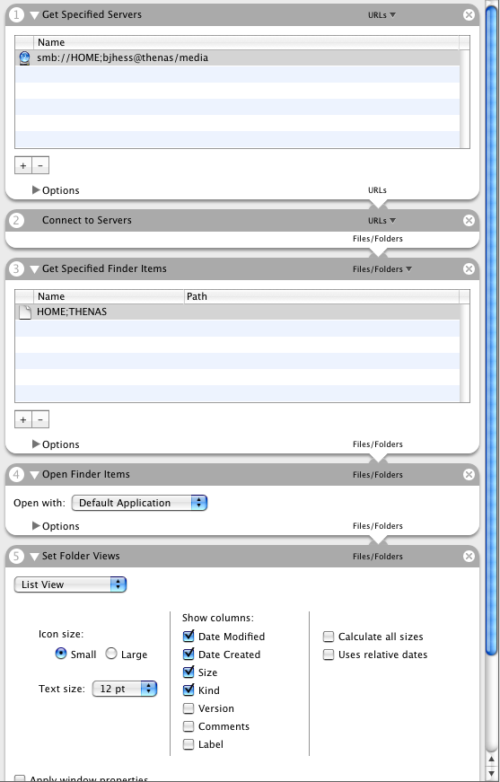
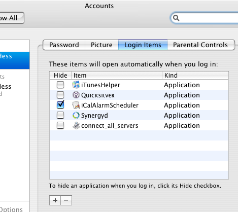
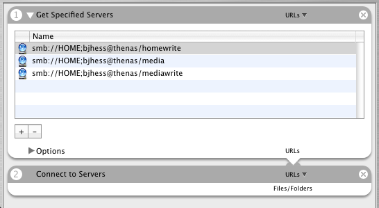

Loading Up Windows Shares Upon OS X Login
Big problem for me with my Mac conversion has been loading up the Windows shared directories out on my network. Actually, these “Windows” shares reside on a couple Ubuntu servers that serve as network accessible storage devices (I should really write about that at some point). It’s just easier to share the contents of these servers with Samba server (looks like a Windows server on the network), especially while I use an Xbox with XBMC as a media server.
Early on I built an Automator script on my MacBook to connect to and mount Windows shares. Mounting a specific share looks something like this in Automator:

Finally, I took the time to figure out how to make things I want mounted available immediately upon login. It’s really quite easy. A simple visit to the Accounts area of System Preferences leads you to an area for defining login tasks. Click on Login Items and drag-and-drop the app version of that Automator script you created above to achieve login nirvana.

Of course, I actually would like three different shares to mount upon login. And I don’t really need them each to popup a new finder window. So I simplified to a single Automator script designed to establish a connection to the shares I desire without being so in-my-face.

I haven’t put this technique through any rigid testing. I’m not sure if it degrades nicely when the network isn’t available, though I suspect it does. I also don’t know what will happen when my MacBook comes out of a few hours of sleep mode. If all else fails, I have a Quicksilver trigger setup on F1 to reconnect to all shares.
April 27, 2007